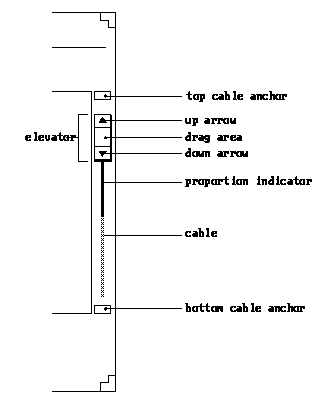

OPENLOOK
1988
CREATOR
Sun Microsystems and AT&T Corporation
ABOUT
OPENLOOK was one of the first standard graphical user interfaces for Unix that was defined in the late 1980s by Sun Microsystems and AT&T. The scrollbar had up and down arrows attached to the top and bottom of the bar. The users were able to click and drag on these to control the direction and distance of the scroll. Along with dragging and dropping in the system.
